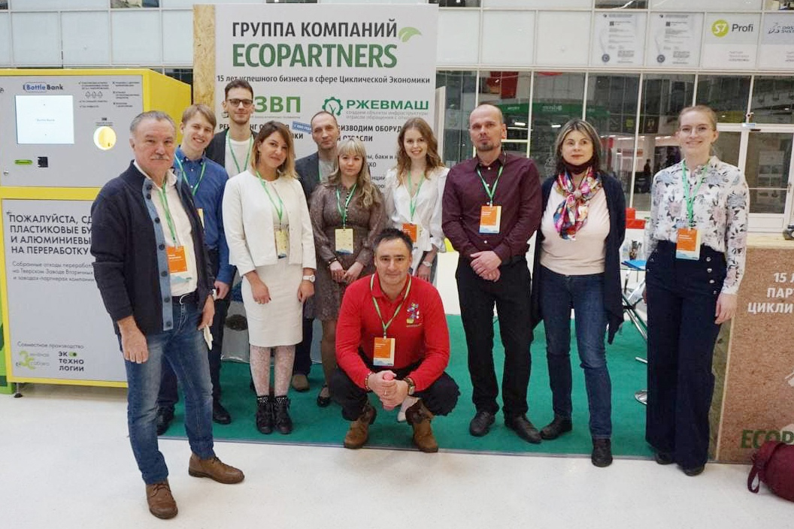

Наш ТЗВП был представлен на выставке «Чистая страна 2021»
В Москве прошел Международный форум-выставка «Чистая страна» в поддержку национального проекта «Экология». ГК «EcoPartners» предложила посетителям и партнерам комплексные и инновационные программы в области циклической экономики и устойчивого развития.
На стенде были представлены наши бизнес-юниты:
Тверской Завод Вторичных Полимеров с объемами переработки более 25 000 отходы пластиковой упаковки из разных регионов страны – от Камчатки до Краснодара. Сегодня ТЗВП внесён в территориальную схему Тверской области по управлению отходами как утилизатор отходов пластика.

Завод РЖЕВМАШ, где разрабатывают и производят мусоросортировочные комплексы, станции мусороперегрузки, прессы, грохоты и контейнеры для сбора отходов. РЖЕВМАШ – обладатель грантов МинПромТорга на разработку и импортозамещающее производство оборудования для прессования ТКО.
Фандомат BottleBank™ стал настоящим центром притяжения посетителей и журналистов. Совместно с нашим партнером «Зеленая Собака» мы развиваем крупнейшую сеть фандоматов с уникальной системой умного прессования. Сегодня наши аппараты установлены в торговых сетях, офисах и заправочных сетях в 9 городах России.